Week 3 · Day 12 — making and breaking the C=C bond
Organic Chemistry 1
About this lecture
Every turn of the citric acid cycle, the enzyme aconitase pulls a water molecule out of citrate to make a C=C bond, then adds the water straight back on, the other way round. It’s an elimination followed by an addition, and it moves the OH to a carbon where your cells can oxidise it.
Today we learn the two reactions that make and consume a C=C bond:
α and β carbons: where the leaving group sits, and where the H comes from
E2: one step, three arrows, an anti-periplanar H
E1: carbocation first, then loss of a β-H, competing with SN1
Electrophilic addition: HBr through the more stable carbocation, Br₂ through a bromonium ion
Products: which alkene, E or Z, which face, which stereoisomer
Yesterday’s substitution reactions are the starting point: the same substrates, but now the reagent can grab a hydrogen instead of a carbon.
Two directions for one π bond
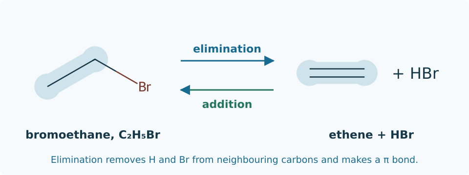
Bromoethane loses HBr to give ethene; ethene adds HBr to give bromoethane
Elimination: lose H and a leaving group from neighbouring carbons; a new π bond forms.
Addition: a π bond is consumed and two new σ bonds form.
Bond audit for propene + HBr → 2-bromopropane (C₃H₆ + HBr → C₃H₇Br): the C=C π bond and H–Br break; C–H and C–Br form; the C–C σ bond stays.
α and β carbons
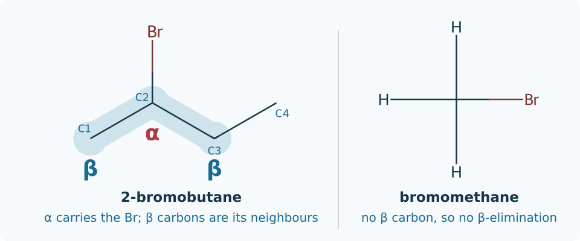
2-Bromobutane with α and β carbons labelled, and bromomethane
The α carbon carries the leaving group. A β carbon is directly bonded to it. β-Elimination removes an H from a β carbon, so CH₃Br, with no β carbon, can’t do it.
Try it: how many β hydrogens does 2-bromo-2-methylpropane, (CH₃)₃CBr, have?
Nine. All three CH₃ groups are β, and all nine H give the same alkene, 2-methylpropene.
E2: three arrows, one step
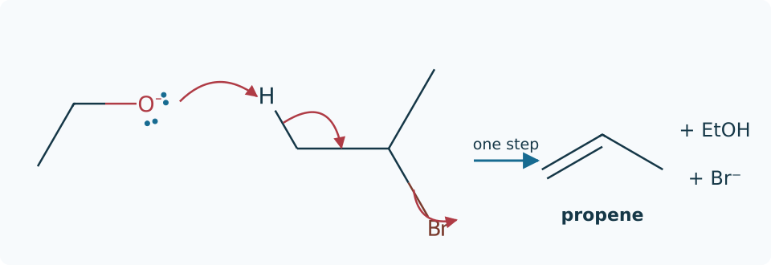
E2 mechanism for 2-bromopropane with ethoxide
The base takes the β-H, the C–H pair becomes the π bond, and bromide leaves, all at once. There’s no intermediate, so the rate depends on both partners: rate = k[RBr][base].
Try it: a student draws base → H and C–Br → Br, but no third arrow. What’s wrong?
The C–H pair is lost. Without the C–H → C=C arrow, nothing forms the π bond and the electron count doesn’t balance.
The H and the leaving group must be anti
Newman projection with the front-carbon H opposite the back-carbon Br
In E2 the reacting C–H and C–Br bonds lie in one plane on opposite sides: an H–C–C–Br dihedral of 180°, called anti-periplanar. The breaking C–H orbital then lines up with the back of the breaking C–Br bond.
Try it: rotate only the rear carbon by 60°. Is that H/Br pair still anti? Is it a different compound?
No, and no. The dihedral is now 60° or 300°, so that pair can’t react, but rotation only changes conformation, not connectivity. Another rotation brings an anti H back.
One substrate, several alkenes
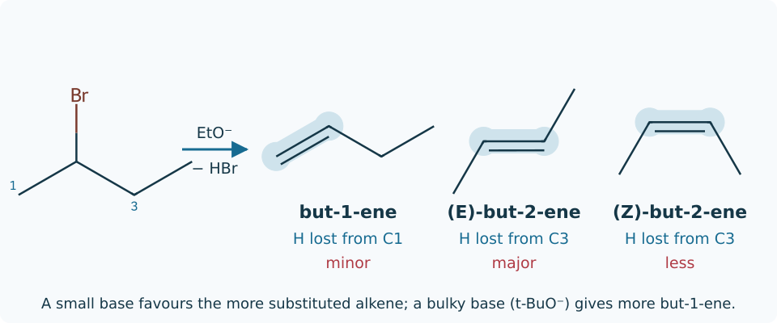
2-Bromobutane gives but-1-ene, (E)-but-2-ene and (Z)-but-2-ene
List the β carbons first; each gives its own alkene. With a small base the more substituted alkene usually dominates (Zaitsev). A bulky base such as t-BuO⁻ reaches the exposed CH₃ more easily and gives more of the terminal alkene.
Try it: which alkenes can 2-bromopentane give with ethoxide, and which is likely major?
Pent-1-ene, (E)-pent-2-ene and (Z)-pent-2-ene. The disubstituted pent-2-ene dominates, mostly as the E isomer.
Can it be E or Z?
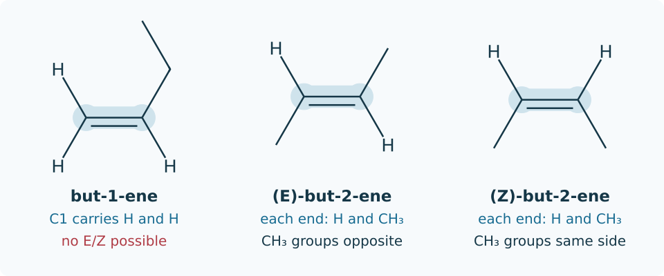
But-1-ene, (E)-but-2-ene and (Z)-but-2-ene with the H atoms on the alkene carbons drawn
Check both alkene carbons. Each needs two different groups. One end with two identical groups (like =CH₂) means there’s no E/Z, however the chain is drawn.
Substitution or elimination?
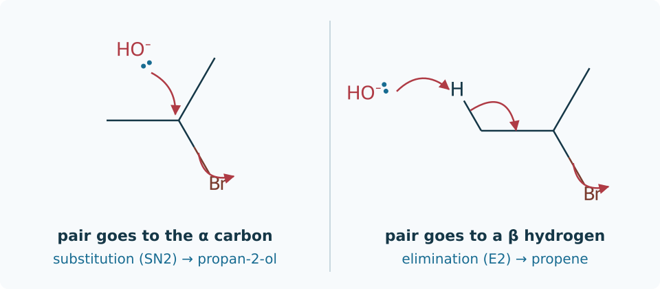
Hydroxide attacking the alpha carbon or a beta hydrogen of 2-bromopropane
favours elimination
favours substitution
strong or bulky base (EtO⁻, t-BuO⁻)
good nucleophile, weak base (I⁻, CN⁻)
secondary or tertiary substrate
methyl or primary substrate
heat
lower temperature
E1: lose the leaving group first
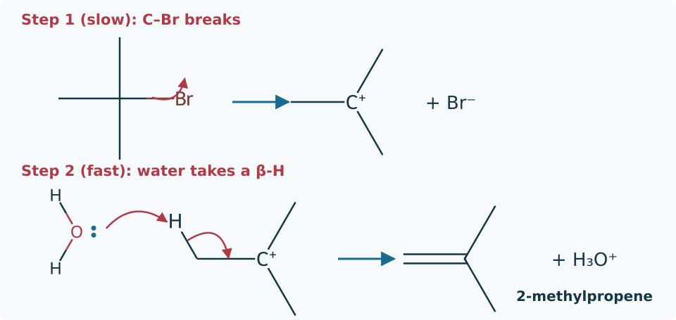
E1 mechanism for tert-butyl bromide in water
Step 1 is the same slow ionisation as SN1. Step 2: even a weak base like water can pull off a β-H, because the C–H pair now flows into an empty p orbital. Rate = k[RBr]; the base doesn’t appear.
One carbocation, two products
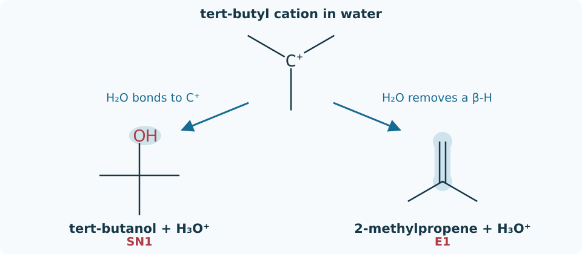
The tert-butyl cation can be captured by water or lose a beta H
After ionisation, water can bond to C⁺ (SN1) or remove a β-H (E1). Seeing a carbocation doesn’t tell you the product; the conditions do.
Try it: raising the temperature shifts the ratio toward the alkene. Why?
Entropy. Elimination turns one cation into two species (alkene + H₃O⁺), so its TΔS term grows with temperature.
E1 or E2?
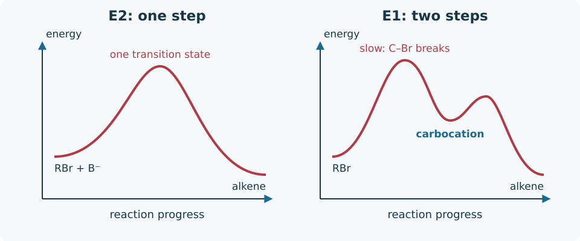
Energy profiles: one transition state for E2, two with a carbocation intermediate for E1
E2
E1
steps
one
two, via a carbocation
rate
k[RBr][base]
k[RBr]
base
strong (EtO⁻, OH⁻)
weak is enough (H₂O, ROH)
geometry
anti-periplanar H needed
any β-H on the cation
Alkenes are nucleophiles: adding HBr
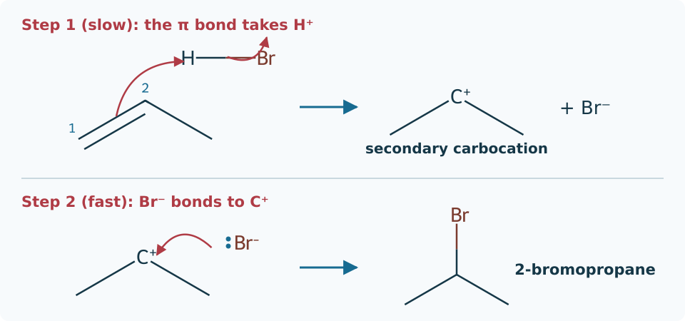
Two-step mechanism of HBr addition to propene
The π electrons are exposed above and below the C=C plane, so the alkene acts as an electron-pair donor. Step 1: π pair → H, H–Br pair → Br. Step 2: Br⁻ lone pair → C⁺.
Markovnikov: the more stable cation wins
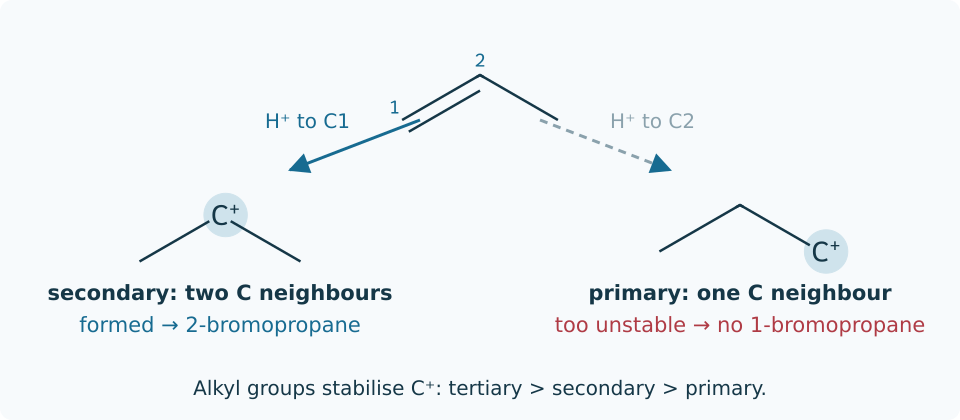
Protonation at C1 gives the secondary cation; protonation at C2 would give a primary cation
H⁺ adds to the end that gives the more substituted carbocation, so Br ends up on the more substituted carbon. Ethene is symmetric: either way gives bromoethane.
Try it: what does 2-methylpropene give with HBr?
2-Bromo-2-methylpropane. H goes to the CH₂ end, giving the tertiary cation, which bromide then captures.
A planar cation has two faces
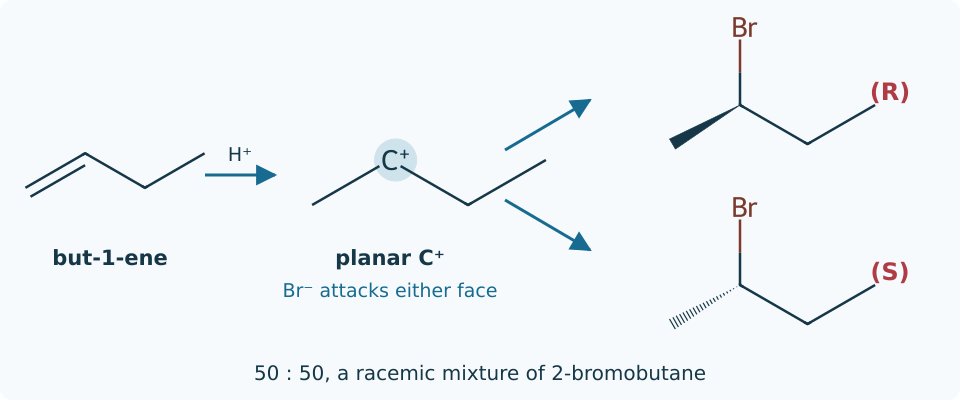
But-1-ene and HBr give both enantiomers of 2-bromobutane
The carbocation is flat, and bromide attacks the top and bottom faces equally. A new stereocentre made this way forms as a racemic mixture.
Try it: will 2-bromobutane made from but-1-ene and HBr rotate plane-polarised light?
No. It’s a 50:50 mixture of R and S, so the rotations cancel.
Br₂ adds through a bromonium ion
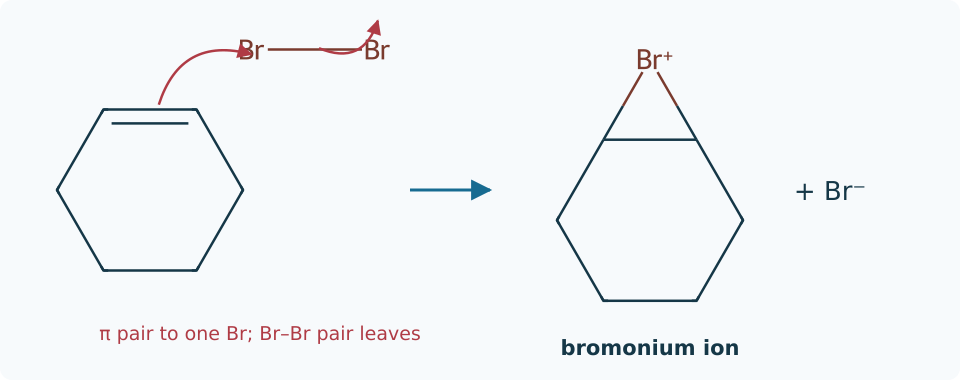
Cyclohexene attacks Br2 to form a bridged bromonium ion and bromide
Br₂ has no H to lose, but the alkene still donates its π pair to one Br as the other leaves as Br⁻. Instead of a free carbocation, the Br bridges both carbons: a three-membered bromonium ion.
Back-side opening gives anti addition
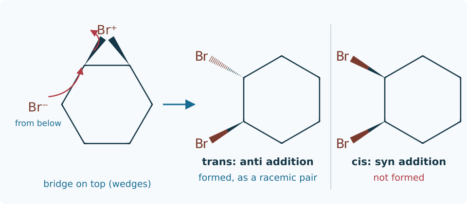
Bromide opens the bromonium ion from the back face, giving the trans dibromide only
The bridge blocks one face, so Br⁻ attacks from the opposite face, like an SN2. The two Br end up anti: cyclohexene gives only trans-1,2-dibromocyclohexane.
Try it: why can’t we just reuse the HBr carbocation mechanism for Br₂?
A free planar cation could be attacked from either face, giving cis and trans. Only trans forms, and only the bridged ion explains that.
Same bonds, opposite directions
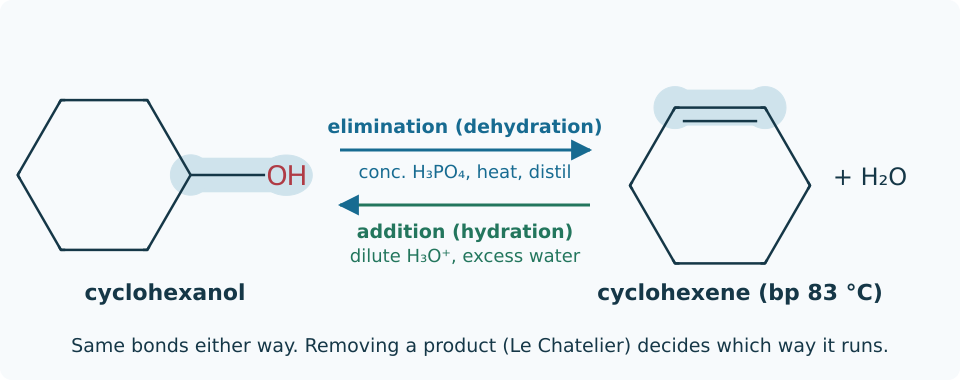
Cyclohexanol dehydrates to cyclohexene; cyclohexene hydrates back to cyclohexanol
Acid-catalysed dehydration (elimination) and hydration (addition) go through the same carbocation. Conditions pick the direction: remove the alkene to drive elimination, flood with water to drive addition.
Try it: in the lab prep, cyclohexene (bp 83 °C) distils out while cyclohexanol (bp 161 °C) stays. Why does that help?
Le Chatelier. Removing a product as it forms pulls the equilibrium toward the alkene.
Back to the mitochondria: aconitase
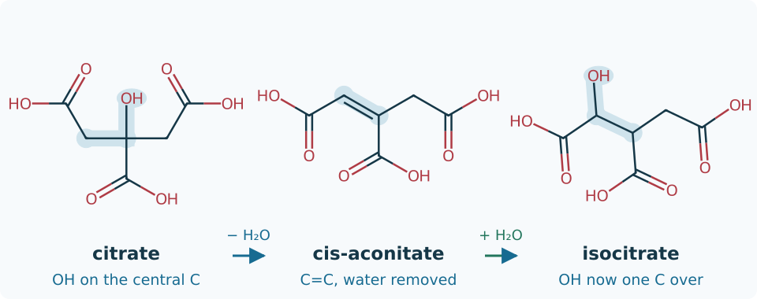
Citrate loses water to give cis-aconitate, which adds water back to give isocitrate
Elimination: the OH leaves the central carbon and an H leaves a β CH₂. Addition: water adds back with OH on the other carbon. Net result: a tertiary alcohol becomes a secondary one.
Try it: why go to the trouble? (Hint: what happens to isocitrate next?)
A secondary alcohol can be oxidised to a ketone; a tertiary one can’t. The next enzyme, isocitrate dehydrogenase, does exactly that. That’s tomorrow’s topic.
Mistakes we see every year
mistake
fix
E2 drawn with two arrows
add C–H pair → C=C
a carbocation drawn in E2
E2 is one step; carbocations are E1
a C–Br arrow in E1 step 2
Br⁻ already left in step 1
only the Zaitsev alkene listed
remove H from every β carbon first
E/Z given to a terminal alkene
both ends need two different groups
HBr adding Br to the end carbon
go via the more stable cation
cis product from Br₂
bromonium opening is anti
one enantiomer from a planar C⁺
both faces react: racemic
Summary
concept
key fact
α / β
leaving group on α; H comes from β
E2
one step, three arrows, anti-periplanar H
E1
ionise first, then lose β-H; competes with SN1
which alkene
all β sites; more substituted usually major
E/Z
both alkene carbons need two different groups
HBr addition
π → H⁺, then Br⁻; more stable cation (Markovnikov)
planar C⁺
both faces react: racemic product
Br₂ addition
bromonium ion, back-side opening: anti
Next: alcohols and redox, and why the cell moves that OH (Day 13). Practice:exercises · self-check